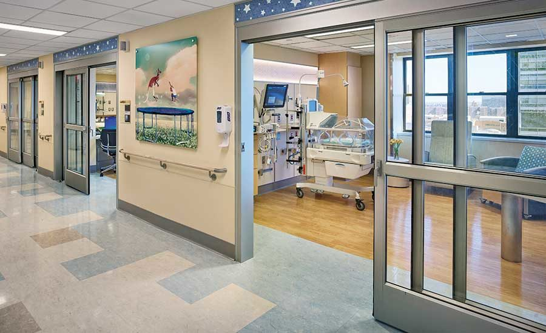

New York Presbyterian
Home to Columbia and Weill Cornell Medicine doctors

FIND A DOCTOR & SCHEDULE AN APPOINTMENT
Search for:
Specialty, Condition, or Provider
Location:
Address,City or ZIP Code
Insurances accepted:
Insurance name
Visiting NewYork-Presbyterian? Learn more about our updated guidelines for patients and visitors.
FEATURED STORIES
New & Noteworthy
- The Delta Variant: What You Need to Know
Stories from Health Matters
- What to Know About the Surge in Summer Colds
Stories from Health Matters
- Dealing With Pregnancy-Related Back Pain? These Tips Will Help
Stories from Health Matters
- Why RSV is On the Rise
Stories from Health Matters